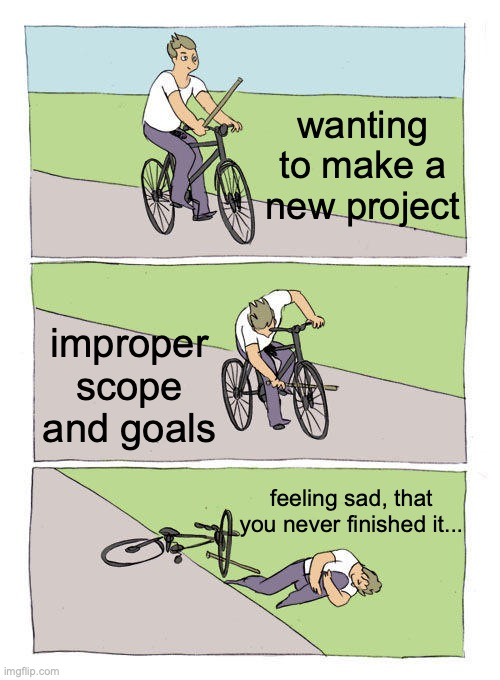

3 Steps to Creating Projects
By : JTexpo
Date : Dec 29th 2023
Table of Contents
Date : Dec 29th 2023
Table of Contents
Why Projects Fail
People possess remarkable talents, often driven by the desire to express those abilities through various side projects, whether for friends, family, or professional pursuits.
However, it's a common challenge to find ourselves with a backlog of unfinished projects. In my opinion, this issue often stems from individuals being overly ambitious with their ideas and lacking a clear roadmap for project development.
In this blog, I will delve into the three steps I have employed to successfully bring my projects to fruition.
However, it's a common challenge to find ourselves with a backlog of unfinished projects. In my opinion, this issue often stems from individuals being overly ambitious with their ideas and lacking a clear roadmap for project development.
In this blog, I will delve into the three steps I have employed to successfully bring my projects to fruition.
Step 1 - Pick a Theme
Our initial step involves selecting a theme, which serves as the foundation for our project.
Themes can vary widely, ranging from a machine learning algorithm, a webscraper, or even a network connection between two systems.
It is crucial to choose a theme that is relatively small in scope, achievable within a timeframe of 1 to 3 days.
While certain themes may not be fully executable within this timeframe; such as, the implementation of a mini-max algorithm that requires a game. It is important to begin with the creation of a template algorithm for the game to be seamlessly integrated later.
It is crucial to choose a theme that is relatively small in scope, achievable within a timeframe of 1 to 3 days.
While certain themes may not be fully executable within this timeframe; such as, the implementation of a mini-max algorithm that requires a game. It is important to begin with the creation of a template algorithm for the game to be seamlessly integrated later.
Step 2 - Branching Ideas
After settling on your chosen theme, the subsequent step involves brainstorming three branching ideas.
The significance of developing fallback plans cannot be overstated, as projects may not always unfold as initially envisioned. It's crucial to avoid discarding all your hard work in the face of unexpected challenges.
If your theme lacks three distinct branching ideas, it might be too narrow and warrant reconsideration. Take, for example, the theme of tic-tac-toe, which is more of a final product than a versatile theme.
Optimal themes could revolve around the algorithm guiding tic-tac-toe gameplay (AI vs. human) or establishing a network connection between two devices (human vs. human). With these broader themes, you can seamlessly generate three diverse branching ideas, such as:
The significance of developing fallback plans cannot be overstated, as projects may not always unfold as initially envisioned. It's crucial to avoid discarding all your hard work in the face of unexpected challenges.
If your theme lacks three distinct branching ideas, it might be too narrow and warrant reconsideration. Take, for example, the theme of tic-tac-toe, which is more of a final product than a versatile theme.
Optimal themes could revolve around the algorithm guiding tic-tac-toe gameplay (AI vs. human) or establishing a network connection between two devices (human vs. human). With these broader themes, you can seamlessly generate three diverse branching ideas, such as:
P v P - Networking Connection
- tic-tac-toe game
- chess game
- messenging app
P v E - AI Algorithm
- tic-tac-toe game
- connect four game
- battleship game

Step 3 - Delevery
The concluding phase of your project centers on determining how you want users to interact with your application.
In some cases, this aspect may already be addressed by the chosen theme. Consider whether you envision users visiting a website, pulling a Git branch, or downloading an executable file.
There is no definitive right or wrong approach for this final step; in fact, you have the flexibility to create multiple forms of delivery for your application. Once you reach this final stage, your project is complete, and it's now the opportune moment to share your creation with the world!
In some cases, this aspect may already be addressed by the chosen theme. Consider whether you envision users visiting a website, pulling a Git branch, or downloading an executable file.
There is no definitive right or wrong approach for this final step; in fact, you have the flexibility to create multiple forms of delivery for your application. Once you reach this final stage, your project is complete, and it's now the opportune moment to share your creation with the world!
Closing Thoughts
In summary, these three steps form the foundation of my project creation process.
The structure is designed to deliver a finished project within one to three days (Step 1), allowing for ongoing refinement and development.
Maintaining a consistent output of completed projects is crucial for sustaining motivation in personal endeavors.
The learning phases of the projects unfold in Steps 2 and 3, with Step 1 intentionally set to be reasonably achievable. This strategic approach alleviates the pressure of not only completing a project but also facilitates the simultaneous acquisition of new knowledge throughout the process.
Maintaining a consistent output of completed projects is crucial for sustaining motivation in personal endeavors.
The learning phases of the projects unfold in Steps 2 and 3, with Step 1 intentionally set to be reasonably achievable. This strategic approach alleviates the pressure of not only completing a project but also facilitates the simultaneous acquisition of new knowledge throughout the process.